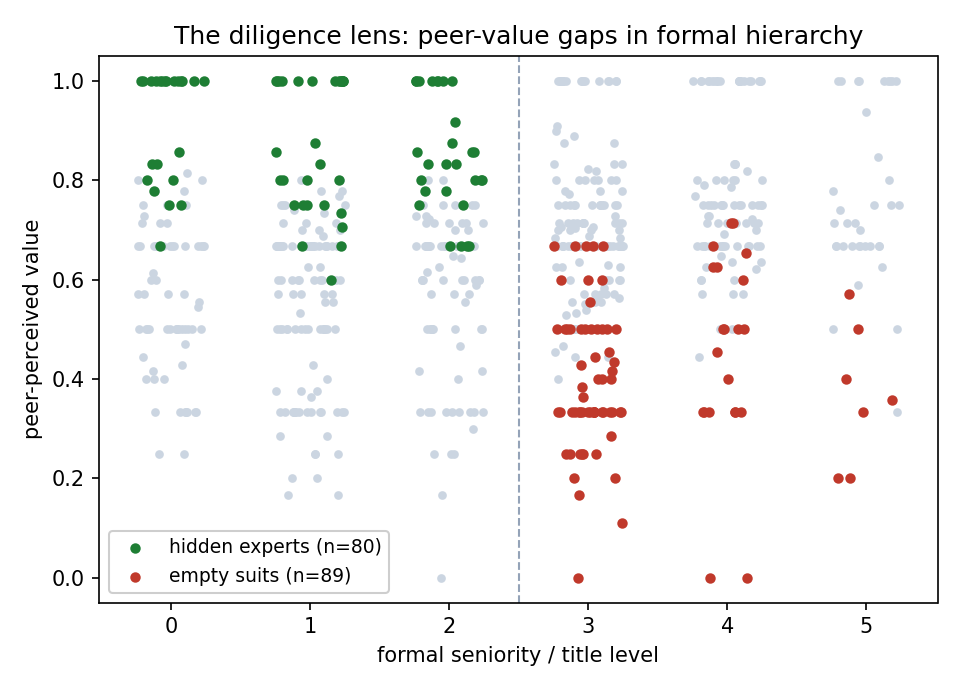

I work where AI systems meet real organizations: multi-agent systems, AI governance and evaluation, the behavioral context of how work actually happens, and the human oversight that keeps it accountable. I build these as a founder and study them as a researcher. The model is not the blocker. The organization around it is.
My work starts from one conviction: in enterprise AI, the model is not the hardest deployment problem. The harder problem is the organization around it: trust, reliance, knowledge flow, accountability, and human oversight.
I build and study AI systems where they meet real organizations, and I keep seeing the same gap between formal records and operating reality. Org charts show structure, but not how decisions actually move. Documents record outcomes, but not whose judgment mattered.
My research makes that invisible structure measurable enough for AI systems to act on, and governable enough for humans to remain accountable. It sits at the intersection of multi-agent systems, AI governance and evaluation, organizational behavior, and human oversight. I came to this work from building systems inside real organizations for seven years, which taught me to treat organizations as living systems, not just datasets.
Three places I have taken this from idea to working system, spanning behavioral context, evaluation, multi-agent systems, and oversight.

A multi-agent system I designed, built, and run, used as a testbed for agent coordination, failure modes, and human oversight: where agents drift over long horizons, what monitoring catches it before it fails silently, and what belongs in deterministic code versus model reasoning.
Research write-ups and work in progress. Essays and articles live on the Writing page.